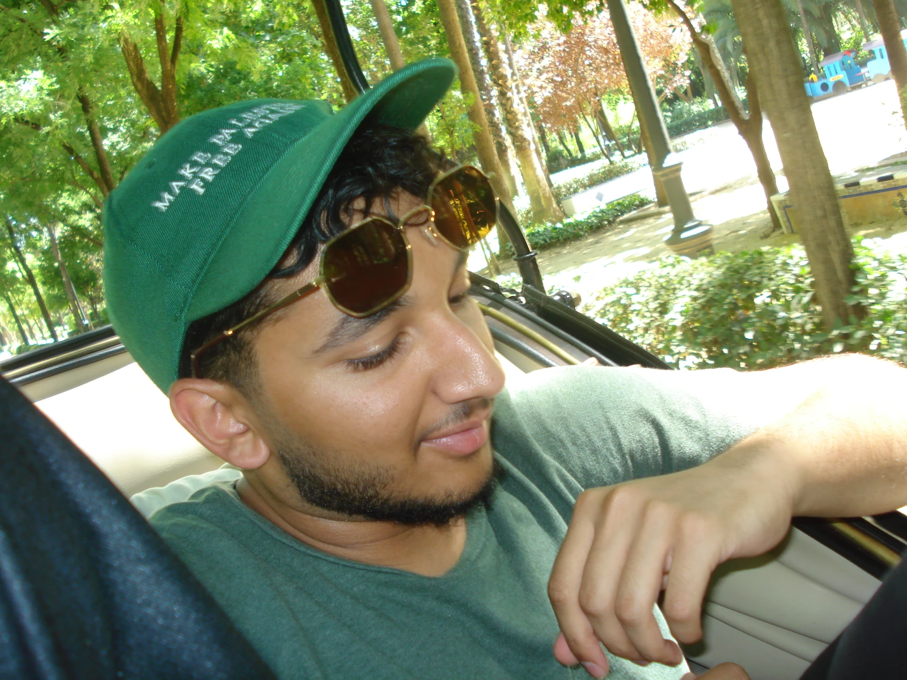
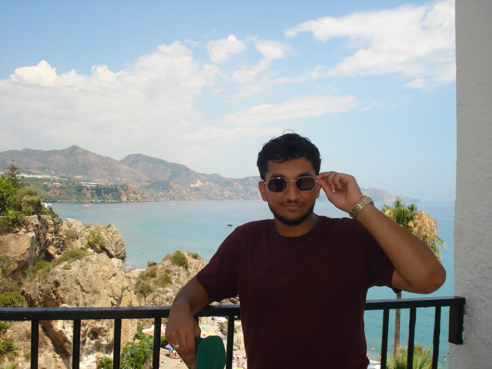
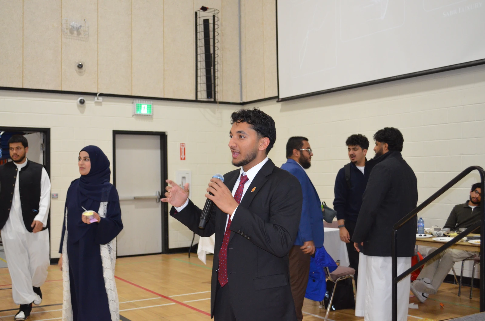
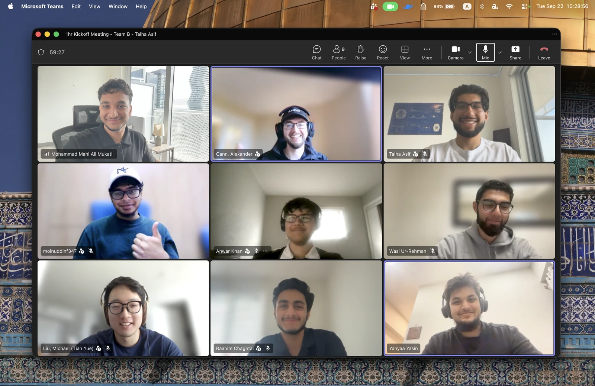
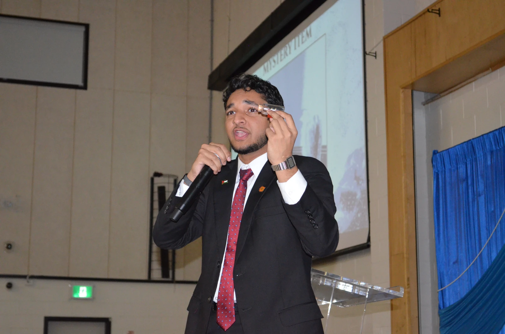
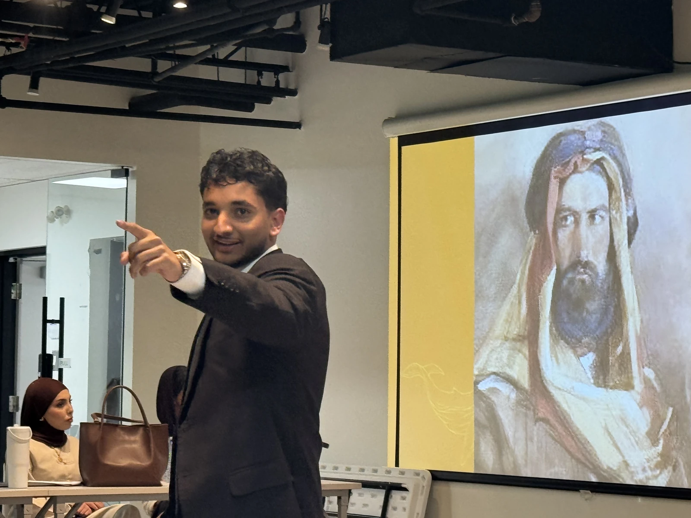
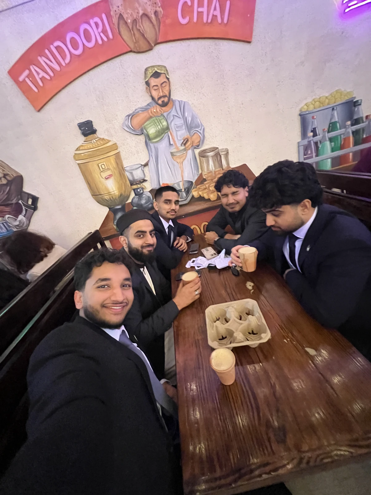

salaam, my name is mahi.
i’m 19, and i live in toronto.

right now, i’m at the university of toronto studying computer science, business, and gis.



i’m currently working on a project with amd, helping game developers incorporate reinforcement learning into their projects by porting and replatforming an open-source plugin called schola.


when i’m not doing that, studying, or having chai at 3 food street, i’m fundraising for orphans and children around the world with charity week.




move your mouse to part the letters, drag to sweep the curtain, or click to send a ripple across the lake. with the artwork focused, use the arrow keys for a ripple and space to pause or resume. touch gestures leave vertical scrolling available.